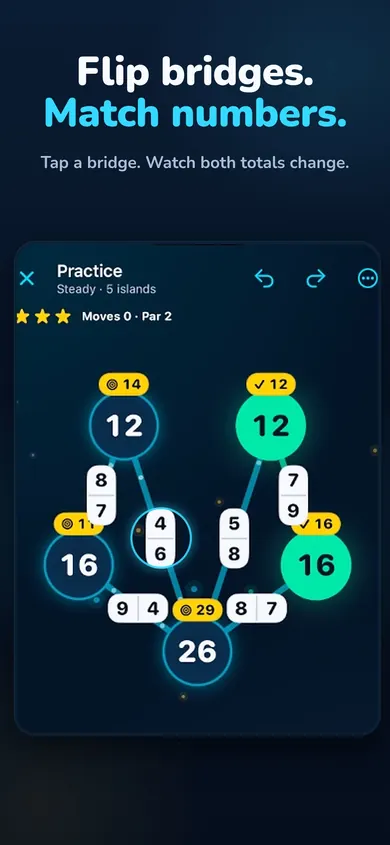

You can tap a bridge and watch the board change. The more useful question comes just before the tap: what do I expect to happen to both islands?
Use the three rounds below on an early Sumbriska board, or alongside the free browser Bridge Sum Lab. Take one round at a time. There is no required pace and no promise that three rounds will make every board easy.
Your practice sheet
Three rounds. Six small checks.
0 of 6
Next: predict what one bridge flip changes.
ROUND 01 / PREDICT
Say it before you flip it.
Choose one bridge. Look at the numbers at its ends and the current totals on its two islands. Predict which island total will rise, which will fall, or whether equal contributions will leave them unchanged.
ROUND 02 / CHECK
Follow the change to both islands.
A flip that helps one island can move its neighbour away from its target. Check both totals before you choose another bridge.
ROUND 03 / EXPLAIN
Make a correction you can describe.
If a move didn't do what you expected, use Undo or a step explanation and inspect it again. In the app, the listing says hints and Undo do not cost XP.
Checks stay on this page only and reset when you reload. This tracks your chosen practice steps, not ability, app progress or a score.
Portable finish
Share the practice, not the answer.
Finish all six checks to unlock a spoiler-safe completion.
The generated result contains only the six-check completion and this public guide link. It does not include a board, move, solution, score, app progress or personal data.
A tiny illustrative example
One swap. Two totals change.
Suppose a bridge contributes 2 to the left island and 4 to the right. Flipping it exchanges those contributions. The left total rises by 2; the right falls by 2.
BEFORE12 / 14Left total / target8 / 6Right total / target
AFTER THE FLIP14 / 14 ✓Left total / target6 / 6 ✓Right total / target
A simplified two-island illustration. Other bridge contributions are included in the starting totals but are not shown. Real boards require every island target to match.
Use help to inspect a move.
A hint can be a starting point for a question: why does that bridge help? Look at the affected totals before moving on. The plan is about observing and explaining; it is not a no-hints challenge.
If the board feels too busy, return to an earlier one or take a break. You don't have to enter the timed Harbor Run to use this practice sheet.

Actual App Store screenshot: bridge numbers, island totals and targets. The practice sheet above is a separate companion guide.
Try it on a real island board
Start with the free regions.
The current listing includes regions 1 and 2, the Daily board, The Deep and Harbor Run in the free download. Sumbriska works offline and has no ads or accounts, according to the listing.
The optional, auto-renewing Voyage Pass adds regions 3–6, side boards, Gale Run, a larger workshop and premium cosmetics. It has no free trial. You don't need it to begin this practice plan.